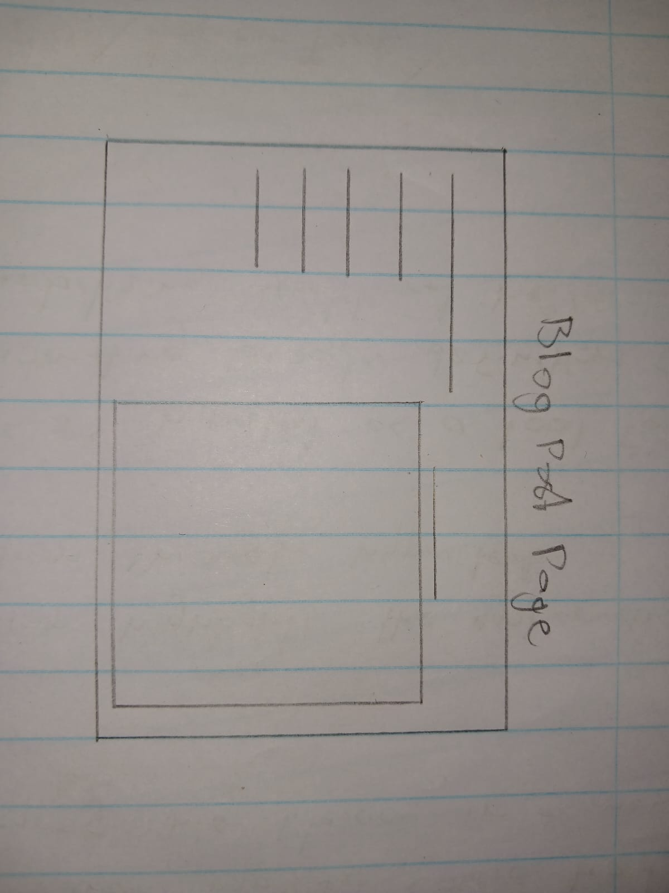

Week 2 blog post
Reflection on reading
The essay by Moulthrop, S, "You say you want a revolution? Hypertext and the laws of media". In this extract Moulthrop touches on how Hypertext was envisioned by Theodor Nelson from Vannevar Bush's 1945 concept of Memex. Moulthrop elaborates on how Nelson popularized Hypertext and even brought forth the plans for a network of information, coordinated centrally by a linking and retrieval system he named Xanadu. Theodor Nelson’s concept of Xanadu imagined a universal hypertext system fostering a “docuverse” where all texts and ideas could be linked. In this extract Moulthrop examines hypertext using Marshall McLuhan's four "Laws of Media", he observed that it is said to reverse when taken to its limit. The extract critically analyzes the origins of hypertext and the early days that inspired the world wide web. It then touches on the vision of hypertext, how it was supposed to replace mediums such as television instead of books. The extract also discusses how hypertext was supposed to advocate interactive mediums and textual exchange, but it was then dominated by large corporations that control how information is displayed to the media. The extract speaks to the internet today by addressing the potential of hypertext to create a medium where users can participate in the sharing of information, of which is similar to what the world of social media today. Also the extract looks at hypertext as a tool for authority and destabilizing traditional hierarchies, this relates to how social media influences people to tip over traditions they do not agree with and establish new ones that they are more comfortable with.Wireframes
Homepage wireframe

The idea behind the homepage is that there is going to be icons that depict the different sections such as the blog post and the essays. These icons are going to slide from left to right, which means one icon is visible on the screen at a time but the next and previous icons are going to be partially to show the viewers that there is more on the sides. This feels like it is going to create issues for mobile browsers since it requires space.Blog post page
The blog post page is depicted in the above wireframe, on the side bar will be where the sections will be, the sections will be the weekly blog post. Putting each weeks blog post will aid the reader in navigating the page since everything will be clearly labeled. The other pages will follow roughly the same layout scheme as I feel if the pages are the same it gives the website a feel of uniformity.